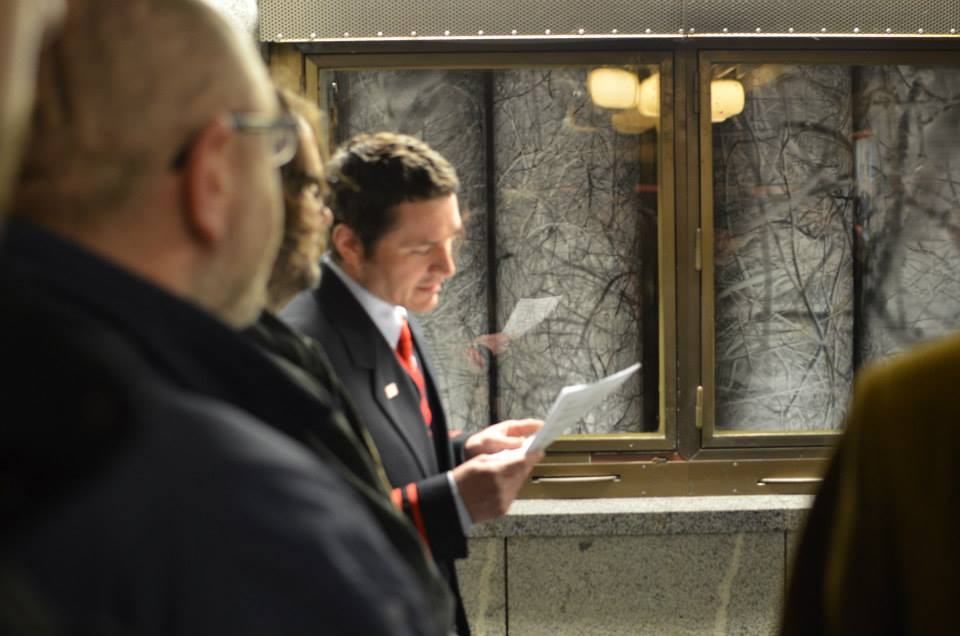

Галерея вне галереи
Маргарита Кирилкина
28/04/2014
Свободные, гибкие, открытые круглосуточно арт-площадки – site-specific галереи взаимодействуют со зрителем и адаптируются к определённому пространству. В Чехии и Словакии их можно найти в кошельке, витрине магазина, холодильнике, луже и других неожиданных местах.
Для художника взаимодействие с выставочным пространством является неотъемлемой частью арт-процесса. Однако помещения галерей не всегда позволяют осуществить художественный замысел в силу организации помещения либо социального, культурного или политического контекстов. Отказ от музеализации и выход из традиционного театрального пространства произошёл в 60-х годах XX в. и был обусловлен в большой степени послевоенным стремлением к реформам искусства. Художники, актёры, танцоры начали перемещаться в кафе, гаражи, подвалы, на улицы. В связи с тем, что реконструкции подвергались только некоторые разрушенные войной промышленные объекты, на европейской территории появилось большое количество опустевших зданий. Художники начали интенсивно использовать бывшие заводы и фабрики в качестве арт-площадок, которые приспосабливались как к новым художественным формам, таким как перфоманс, новый цирк, инвайронтмент, так и к проведению выставок1. Феномен адаптации арт-акции или объекта определился термином «site-specific», что буквально и означает «приспосабливание к месту».
В странах Восточного блока распространение галерей, адаптированных к негалерейному пространству, было обусловлено стремлением преодолеть тоталитарный контроль публичной сферы, когда молодые художники не могли выставляться в официальных галереях. Экспозиции беларуских художников на набережной Свислочи в начале 80-х гг - типичный пример советских site-specific выставок. Так как многие работы не были приняты официальным Союзом художников, а также подверглись критике беларуской Академии искусств, художники решили выставлять холсты прямо на улице вдоль реки2. Таким образом было осуществлено не только сопротивление государственной цензуре, но и акт выхода из традиционной галереи в пространство более гибкое и доступное большему количеству зрителей.
-
Алексей Жданов читает стихи. Минск, конец 1980-х / из архива Ольги Сазыкиной
-
Справа налево: Ольга Сазыкина, Геннадий Хацкевич, Александр Непомнящий с подругой. Минск, конец 1980-х / из архива Ольги Сазыкиной
-
Выставка разрисованных рубашек, которые выдавали военнослужащим. Проект Геннадия Хацкевича и Ольги Сазыкиной. Минск, конец 1980-х / из архива Ольги Сазыкиной
-
Слева направо: Елена Короткая, Ольга Сазыкина, Жаклин, Аркадий Анищенко. Минск, конец 1980-х / из архива Ольги Сазыкиной
-
Художник Геннадий Хацкевич пишет картину на празднике Дня города. Минск, конец 1980-х / из архива Ольги Сазыкиной
-
Милиция препятствует проведению поэтического вечера на берегу реки Свислочь. Слева на фото художник Валерий Мартынчик. Минск, конец 1980-х / из архива Ольги Сазыкиной
-
Виктор Петров за работой. Фестиваль авангардных искусств, Нарва (Эстония), конец 1980-х / из архива Ольги Сазыкиной
-
Художник Геннадий Хацкевич на празднике Дня города. Минск, конец 1980-х / из архива Ольги Сазыкиной
Site-specific галереи и сегодня часто появляются совершенно спонтанно. Одна из таких неожиданных художественных площадок существует в луже в чешском городе Острава благодаря двум художникам Яны Згоржовой (Jana Zhořová) и Либора Новотного (Libor Novotný). Они заметили, что на одной из остравских улиц после дождя образуется лужа, которая долго не высыхает. В результате появляется некое пространство, которое возможно использовать в художественных целях. «Лужа» (Kaluž) стала местом проведения незапланированных перфомансов и инсталляций, зависимых только от погоды. Одновременно были решены и вопросы поиска галерейного пространства и связанной с этим организационной рутины.
-
-
-
Инсталляция «Снова», Jakub Jansa. Вся вода из лужи всасывается в прозрачные трубки длиной в несколько метров, создавая «кровеносную систему» между землей и небом. Фото:
galeriekaluz.wordpress.com
-
-
-
-
Сестринским проектом «Лужи» является галерея «Кукушка» (Kukačka), которая позиционируется как платформа негалерейной презентации современного искусства и основана на принципе гнездового паразитизма кукушки обыкновенной. Подражая ей, галерея захватывает публичное пространство и использует в художественных целях. Некоторые проекты «Кукушки» легко увидеть на улицах Остравы, другие же едва заметны, но на сайте галереи можно найти ключ к поиску арт-объектов, что превращает «Кукушку» в урбанистическую игру. Это предоставляет зрителю возможность напрямую взаимодействовать с городом посредством включения в художественное действие. За 5 лет на двух площадках прошли выставки более 30 авторов.
Художники обычно остаются финансово независимыми и сами курируют собственные site-specific галереи, что даёт им свободу развиваться в любом направлении. «Галерея в кошельке» (Galerie V Peněžence), созданная двумя студентками Академии искусств в Брно Кларой Брихачковой (Klára Břicháčková) и Марией Штиндловой (Marie Štindlová), – типичный пример такого рода проектов. Идея передвижной галереи возникла у одной из художниц, когда та получила в подарок от бабушки кошелёк с двумя прозрачными карманами, который трансформировала в выставочное пространство. Кошелёк-галерея перемещается из рук в руки на вернисажах в кафе, в лесу либо на открытиях выставок в традиционных галереях. С 2011 года галерею «посетило» огромное количество зрителей.
Независимыми арт-площадками могут быть и рекламные либо магазинные витрины, которые усилиями художников из коммерческих объектов превращаются в уличные галереи, как, например, галерея «Умакарт» (Umakart) в Брно, которая расположена в витрине недействующего магазина. Галерея была создана с целью презентации студенческих работ Факультета изобразительных искусств случайным прохожим. Как отмечают студенты, значимый фактор «Умакарт» – её способность к социальной и культурной интеракции. Доступность site-specific искусства является одной из ключевых задач таких проектов, а возникновение альтернативных выставочных пространств повышает вероятность непосредственной интеграции искусства в городское пространство, его исследования и использования его пустот.
-
-
-
-
-
-
-
Перфоманс «Прообраз человека в мире», Iva Polanecká, Adam Chmiel. Фото:
Umakart Facebook
-
Открытие выставки «Пролетела нежная птица по небу», Tomáše Hodbodě. Фото:
Umakart Facebook
В подземном переходе к автобусному вокзалу словацкого города Тополчаны можно найти галерею «Платформа 1-12» (Nástupište 1–12) в бывших торговых боксах, где проводятся воркшопы для детей и взрослых, театральные представления, лекции и концерты. Время акций обычно совпадает со временем, когда через переход к вокзалу проходит наибольшее количество людей. Можно сказать, что пространство вокзала стало не только утилитарным, но и культурным.
Похожим примером служит и галерея «Проектплюс» (Projektplus) на Пражском вокзале «Голешовице», где художники используют для презентации работ стеклянную витрину. Галерея образовалась как часть проекта, цель которого – художественная интервенция в пространство, где было бы возможно наблюдать за взаимоотношением творческих и познавательных способностей человека. Потенциал вокзальных галерей довольно высок, так как вокзал – это коммуникативное пространство, где город связывается с другими странами и регионами. Ежедневно там пересекаются пути жителей различных городов и информация распространяется на большую территорию.

«Барабаны», Jan Daňhel, галерея «Проектплюс». Фото: Jakub Halousek
Тем не менее галерея может функционировать и в приватном пространстве, а выставочной витриной оказаться любой предмет быта. Словацкая художница Мира Габерова (Mira Gáberová) организовала в своей квартире в Братиславе галерею из холодильника, дверь которого мы часто и сами используем для демонстрации открыток и магнитов из путешествий, семейных фотографий и т.д. Мира поместила арт-объекты не только на поверхность холодильника, но и внутрь него. Вдобавок холодильник использовался по прямому назначению. Позже в «Холодильнике» (Chladnička) начали выставляться и приглашённые гости. В итоге частная квартира на какое-то время превратилась в открытое культурное пространство.
Проведение домашних выставок напоминает феномен квартирника, распространённого в советские времена, когда многие музыканты не могли давать публичные концерты из-за запрета государственных структур. В связи с диктатом советской культурной политики музыканты и художники были вынуждены оставаться в подполье, организовывая выставки в своих квартирах или загородных домах, что, однако, способствовало формированию ряда течений советского андеграунда. Одной из важных предпосылок site-specific галерей также была необходимость художников поддерживать связь и обмениваться опытом в условиях информационного вакуума.
Традиция перевоплощения приватных домов и квартир в культурные площадки распространена и сегодня. В пример можно привести беларуский ДК «La мора» – арт-пространство, которое было организовано в 2011 году в одном из домов частного сектора в Минске и просуществовало до осени 2013. Два года «La мора» был местом для проведения выставок, концертов, мастер-классов, лекций, платформой для обмена знаниями и творческими идеями. Не менее значимой является культурная площадка и общественная организация «Арт-Сядзіба», где проходили концерты, перфомансы, литературные чтения. За два года «Арт-Сядзіба» вынуждена была переезжать 4 раза из-за давления государственных структур, и на данный момент готовится к пятому переезду, на этот раз начав сбор средств на покупку собственного помещения. С 2011 года организация размещалась в минском торговом доме «Горизонт», в частной квартире и в здании завода «Горизонт», где прошли десятки культурных мероприятий. В 2012 году «Арт-Сядзіба» должна была открыться в комнатах бывшего румынского посольства, но у организаторов возникли проблемы с арендодателями.
-
-
-
-
-
Первое помещение «Арт-Сядзібы», завод «Горизонт». Фото: Анастасия Ильницкая,
websmi.by
-
-
«Арт-Сядзіба» в здании бывшего игрового клуба. Фото: Алесь Герасіменка,
Generation.by
-
-
«Арт-Сядзіба» в здании бывшего посольства Румынии. Фото: Алесь Герасіменка,
Generation.by
В последнее время в Беларуси состоялись несколько site-specific выставок в рамках проекта «Going Public – О трудностях публичного высказывания»3. Главной целью его была дискуссия о потенциале искусства в общественном пространстве и о концепциях публичности. В ходе проекта художники исследовали взаимоотношения искусства и публичного пространства. Так как подъезд представляет собой переходное пространством из приватного в публичное, местом пересечения соседей и площадкой для потенциальной коммуникации, несколько выставок были организованы именно там. Молодой беларуский фотограф Максим Сарычев расклеил свои фотографии о волонтёрских приютах для бездомных собак на первом этаже жилого дома в Малиновке, включив жителей дома в арт-событие и информировав о существующей проблеме.
Пространство одного из минских подъездов также использовала Илона Дергач, которая разместила газетные вырезки от входа в подъезд до второго этажа по принципу социальной важности новостей – от наиболее актуальных к менее, – чтобы привлечь жителей дома к теме гражданского общества.
Коммуникативный потенциал site-specific галерей может способствовать расширению культурного поля и предоставляет молодым художникам возможность выхода в публичную сферу даже в том случае, когда официальные структуры не готовы к принятию новых форм искусства. Site-specific галереи предполагают создание альтернативы официальным художественным институциям, противостоят их влиянию на культурную сферу, при этом оставаясь независимыми от финансирования и вертикальных связей. Преимущество состоит в готовности к трансформациям и доступности для каждого высказывания.
Использованная литература:
[1] VÁCLAVOVÁ, Denisa, ŽIŽKA, Tomáš a kol. Site Specific. Ed. Jan Dvořák. Praha: Pražská scéna, 2008
[2] ШПАРАГА, О. Демократический потенциал культурных практик в условиях современных авторитаризмов: случай Беларуси. В: Постсоветская публичность: Беларусь, Украина. ЕГУ, 2008. С. 163
[3] Проект был инициирован куратором Леной Пренц и институтом им. Гёте в Беларуси, Калининграде и Литве.
Автор: Маргарита Кирилкина
Фотографии: Zuzana Godálová (главное фото), Анастасия Ильницкая / websmi.by, Архив Ольги Сазыкиной, Алесь Герасіменка / Generation Y, Юра Сідун / Generation Y, Юля Fox / Generation Y, Ольга Семашко, Максим Сарычев